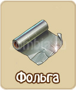

Получено: файл; исходный URL. Получены исходные байты по адресу страницы; идентичность оригинальному домену при замене хоста не подтверждена. Страница: источник.
Фольга
ВКонтакте; данные из ZOMBIA; 21 Декабря 2011, 19:47- Тип
- нет данных
- Покупка
- нет данных
- Продажа
- нет данных
- Как получить
- Получить за зимнюю коллекцию. (ВКонтакте, ZOMBIA; требует сверки).
- Применение
- нет данных
- Особенности
- нет данных
- Версия и дата
- ВКонтакте; данные из ZOMBIA; 21 Декабря 2011, 19:47
Данные по источнику · ВКонтакте, ZOMBIA · 21 Декабря 2011, 19:47; дата редакции не установлена
Предварительно: Данные одной исторической фанатской страницы; цифры и подписи изображений требуют сверки. Описание и условия сохранены по колонкам без додумывания.. Требуется сверка.
- Описание материала
- [изображение: Фольга] Стоимость: 1 Зб
- Участвует в строительстве
- нет текстовых данных; возможны неподписанные изображения
- Как достать
- Получить за зимнюю коллекцию.
- Участвует в создании
- [изображение: Вишневый автобус] [изображение: Шаттл]


Данные по источнику · браузерная Зомби Ферма / Зомби Мания; платформа требует проверки · дата URL не гарантирует дату редакции
Предварительно: Индивидуальная страница прочитана автоматически, подписи значков могут содержать ошибки; даты редакции и независимость от ЗомбиСити не установлены.. Требуется сверка.
- Основной блок страницы и подписи изображений
- Материал [иллюстрация: Фольга] Фольга Цена покупки: 1 [иллюстрация: Зомбаксы] Цена продажи: 700 [иллюстрация: Монеты] Продать или купить Фольгу можно в Обменке Зомби Фермы Материал Фольга появился в Зомби Ферме в конце 2011 года - во время обновления на поиск Елок. Для прохождения квестов стали необходимы Палочки-выручалочки, которые можно приготовить из Фольги. Фольгу можно создать в постройке: Фольга [иллюстрация: Фольга] = 1 Трансформат [иллюстрация: Трансформатор] + 5 Металл [иллюстрация: Металл] [иллюстрация: Стрелка] Костёр [иллюстрация: Костёр] Фольгу можно найти в ценностях: Подарок строителю [иллюстрация: Подарок строителю] Ящик Дворника [иллюстрация: Ящик Дворника] Письмо от Мастера [иллюстрация: Ценность Письмо от Мастера] Фольгу можно получить, сдав коллекции: Подземельная [иллюстрация: Подземельная Коллекция] Зимняя [иллюстрация: Зимняя Коллекция] Фольга участвует в создании: Палочка-выручалочка [иллюстрация: Палочка-выручалочка] = 10 Яблочный мак [иллюстрация: Яблочный мак] + 1 Фольга [иллюстрация: Фольга] [иллюстрация: Стрелка] Повара [иллюстрация: Повара] 5 Палочка-выручалочка [иллюстрация: Палочка-выручалочка] = 1 Секвойя [иллюстрация: Секвойя] + 1 Фольга [иллюстрация: Фольга] [иллюстрация: Стрелка] Серьёзный коттедж [иллюстрация: Серьёзный коттедж] Фольга участвует в строительстве: Шаттл [иллюстрация: Шаттл] Вишнёвый автобус [иллюстрация: Вишнёвый автобус] Падение в Бездну [иллюстрация: Падение в Бездну] Золотой слон [иллюстрация: Золотой слон] Остров Чудовища [иллюстрация: Остров Чудовища] Чертовы ворота [иллюстрация: Чертовы ворота] Гиперсфера за зомбаксы [иллюстрация: Гиперсфера за зомбаксы] Гиперсфера за голоса [иллюстрация: Гиперсфера за голоса] Перевал №1 [иллюстрация: Перевал №1 ] Заброшенная шахта [иллюстрация: Заброшенная шахта] Вход на арену [иллюстрация: Вход на арену] Звездный волк [иллюстрация: Звездный волк] Звездный волк 250 [иллюстрация: Звездный волк 250] Адмирал Виталион [иллюстрация: Адмирал Виталион] Адмирал Виталион 1600 [иллюстрация: Адмирал Виталион 1600] Фольгу можно выиграть в рулетках: Флаг Кореи [иллюстрация: Флаг Кореи] Фольгу можно найти при колдовании Палочками дома над вещами: Палочка-выручалочка [иллюстрация: Палочка-выручалочка] [иллюстрация: Стрелка] Мобильный телефон [иллюстрация: Мобильный телефон] Бронзовый кубок [иллюстрация: Бронзовый кубок] Серебряный кубок [иллюстрация: Серебряный кубок] Золотой кубок [иллюстрация: Золотой кубок] Золотая бутса [иллюстрация: Золотая бутса]
Связанные сущности
нет проверенных связей — требуется сверка.